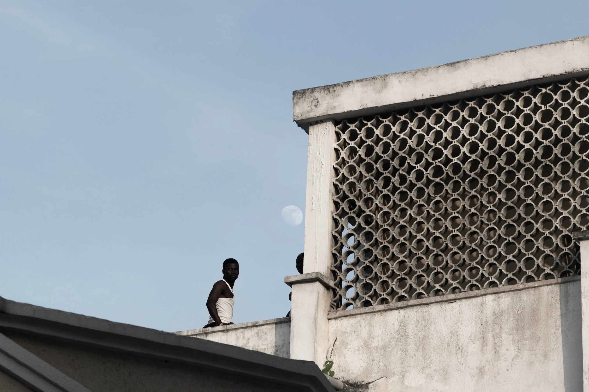
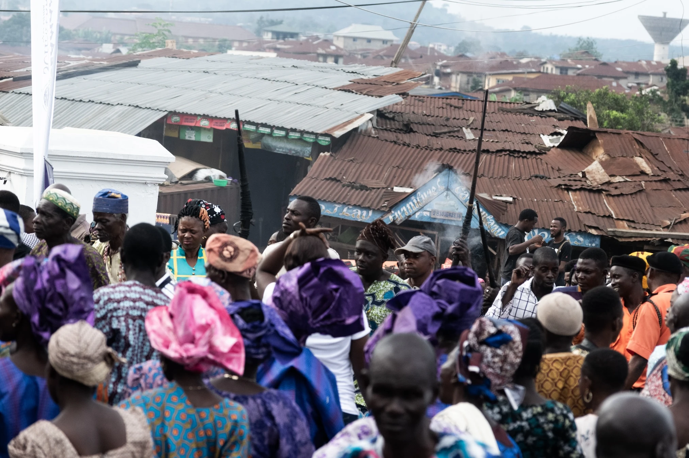
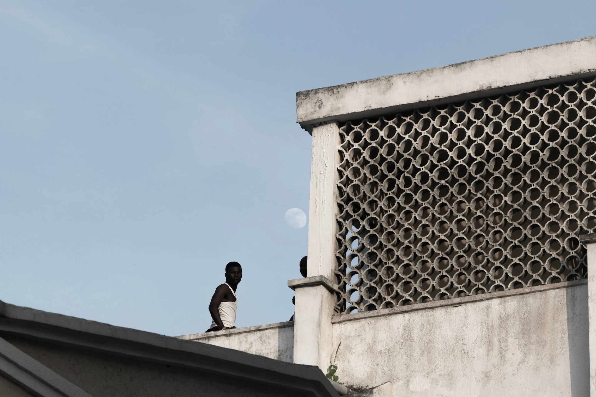
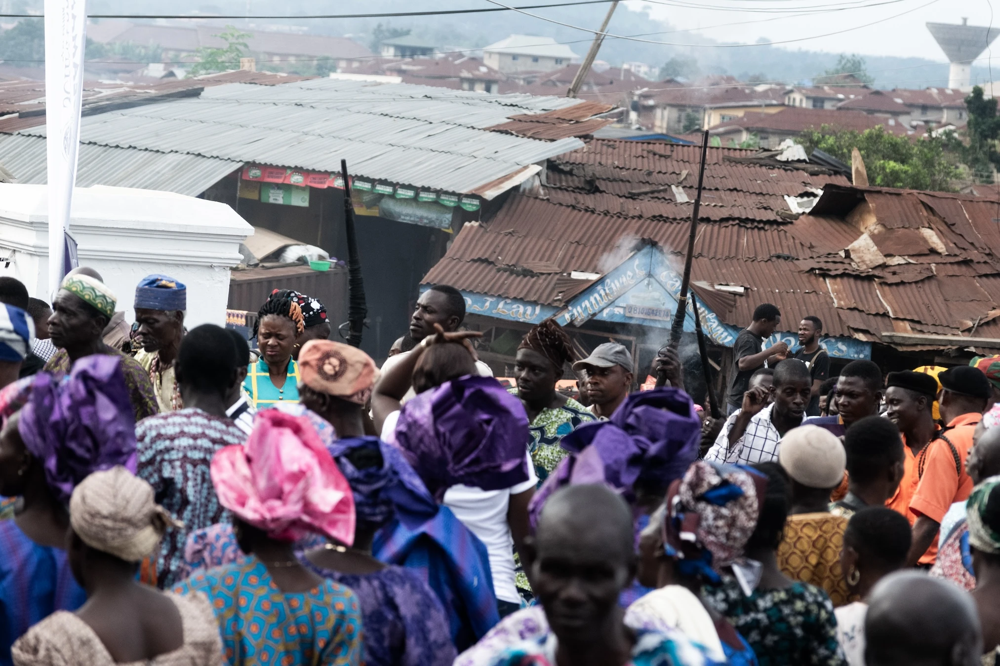

Nigeria
I've visited Nigera 3 times now, and photographed it twice. Once in the summer of 2017 during the Olojo Festival, and again in the winter of 2020. Here are pictures from 2020 and 2017




I've visited Nigera 3 times now, and photographed it twice. Once in the summer of 2017 during the Olojo Festival, and again in the winter of 2020. Here are pictures from 2020 and 2017

